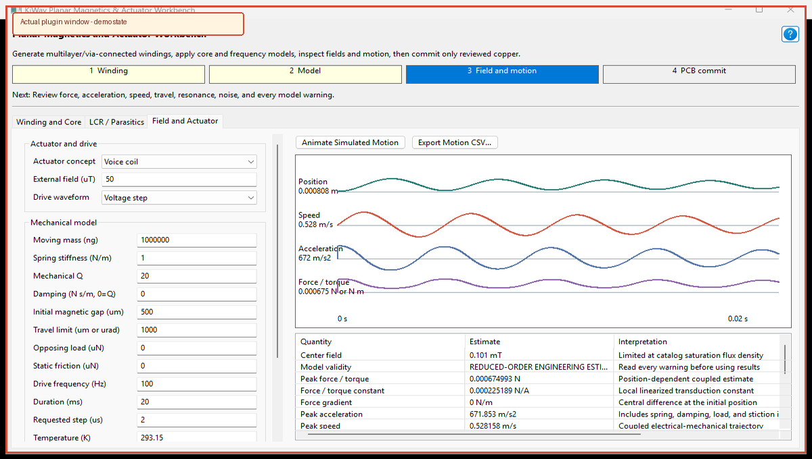

| Input | Meaning |
|---|---|
| Moving mass / rotor inertia | Effective modal mass or rotary inertia, not necessarily total physical mass. |
| Spring / angular stiffness | Linearized restoring stiffness around the operating point. |
| Mechanical Q or damping | Enter damping directly, or leave zero to derive it from Q. |
| Gap and travel limit | Initial magnetic gap and hard position clamp. Contact bounce is not modeled. |
| Load and stiction | Constant opposing load and a simple breakaway-force threshold. |
| Drive | Voltage/current step or sine waveform. Voltage drive includes coil L/R and back EMF. |
The electrical state uses L di/dt = V - Ri - Ke v. Linear motion uses
m x'' + c x' + kx = Fmag - Fload - Ffriction; rotary motion uses the
inertia/torque equivalent. Solenoid force is based on
F = 0.5 i^2 dL/dx with a variable air-gap reluctance and saturation
clamp. Voice-coil force uses a local B l i model with gap roll-off.
The RK4 integrator automatically tightens the requested step against electrical
and mechanical time constants and limits runs to 200,000 internal steps.
Mechanical resonance is sqrt(k/m)/(2 pi). Thermal force-noise
density uses sqrt(4 kB T c), and equilibrium Brownian displacement
uses sqrt(kB T/k). These are lumped, linear, equilibrium estimates.
The four-lane plot shows position, speed, acceleration, and force or torque against time. Each lane is independently normalized and labeled with its peak; compare values in the results table rather than comparing lane heights. Export Motion CSV writes every displayed sample with SI units. Animation follows the simulated trajectory but visually amplifies very small travel.
For MEMS/NEMS work, replace every default with process-specific measured values, solve coupled electromagnetic, structural, thermal, and fluid domains, perform mesh and timestep convergence studies, include uncertainty/Monte Carlo analysis, and correlate against fabricated test structures.
The one-mode mass/spring/damping structure and thermal-noise treatment follow standard nanomechanical resonator practice. See the NIST cantilever control and noise treatment and peer-reviewed nanomechanical force-sensitivity literature: NIST cantilever modeling, diamond nanomechanical resonators, and thermal-noise-driven resonators.